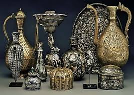

.jpg)
Ancient and Medieval Period
Early Metallurgy: Maharashtra, like much of India, has a history of metalworking dating back to the Indus Valley Civilization (circa 2500–1500 BCE). Copper, bronze, and iron tools and ornaments were widely used.
Satavahana Dynasty (1st century BCE–2nd century CE): The Satavahanas promoted trade and craftsmanship, particularly in gold, silver, and iron. They were known for their coinage, which demonstrated advanced metalwork.
Chalukyas and Rashtrakutas (6th–10th century CE): During this period, metallurgy flourished. Blacksmithing, bronze casting, and weapon-making were prominent industries, supported by the ruling dynasties.
Maratha Empire (17th–18th century): Under the Marathas, metalworking became a vital part of the military economy. Weapons, armors, and coins were produced in local workshops, reflecting high levels of skill.

Colonial Period
Introduction of Modern Techniques: During British rule, modern industrial techniques were introduced to Maharashtra. Ports like Mumbai facilitated the import of machinery and export of metal goods.
Rise of Small-Scale Foundries: By the late 19th and early 20th centuries, small-scale foundries emerged, catering to agricultural tools, household items, and infrastructure needs.
Tata Iron and Steel Company (TISCO): While not based in Maharashtra, TISCO's growth influenced the state's metal industry, as raw materials and finished products flowed through Mumbai's ports.